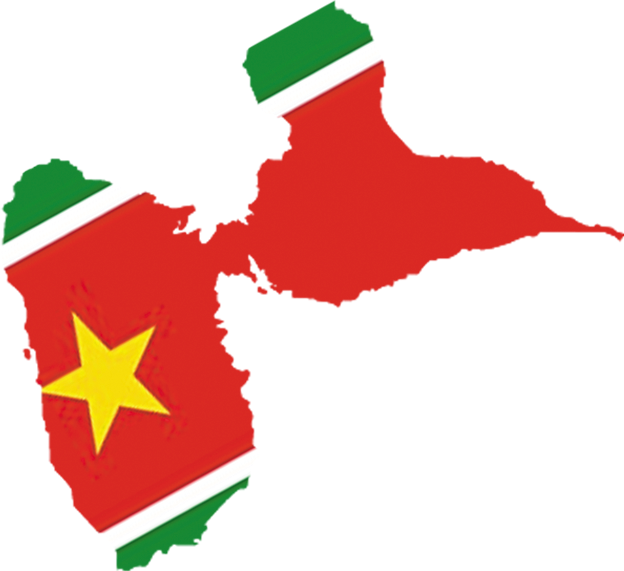
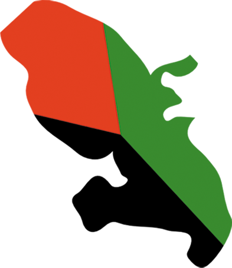
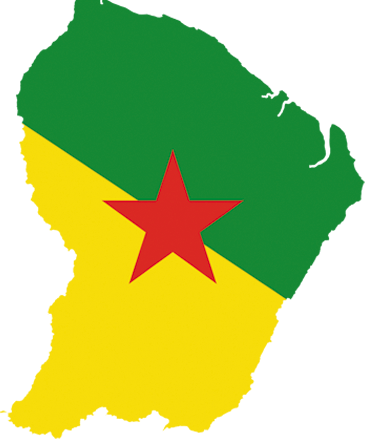
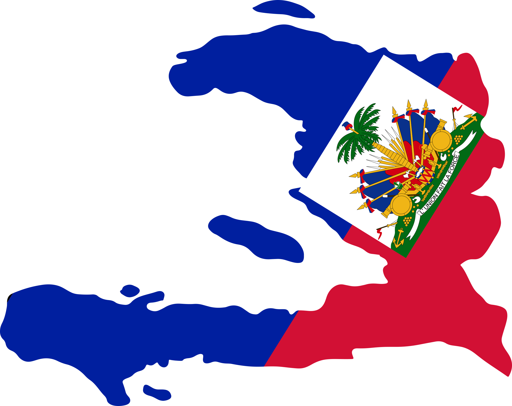

Our mission, our story, our communityNotre mission, notre histoire, notre communauté
The name "Noula" comes from Antillean Créole "nou la", meaning "we're here" or "here we are". It's a statement of presence, togetherness and belonging · the idea that we show up for each other and for our culture. Le nom "Noula" vient du créole antillais "nou la", qui signifie "nous sommes là". C'est une affirmation de présence, de solidarité et d'appartenance · l'idée que nous sommes là les uns pour les autres et pour notre culture.
Noula is a UK-registered charity dedicated to celebrating and sharing French Caribbean heritage. We celebrate the culture, history, traditions and contemporary life of the French Caribbean as a whole. Through events, workshops, gatherings and creative expression, we build spaces where this rich heritage is honoured, explored and shared. Noula est une association caritative britannique dédiée à célébrer et partager le patrimoine antillais. Nous célébrons la culture, l'histoire, les traditions et la vie contemporaine des Antilles françaises dans leur ensemble. À travers des événements, ateliers, rencontres et expressions créatives, nous construisons des espaces où ce patrimoine riche est honoré, exploré et partagé.
The people who govern Noula and hold us accountable to our mission. Les personnes qui gouvernent Noula et garantissent notre mission.
Chairperson & Programme LeadPrésidente & Responsable de programme
Treasurer & Fundraising LeadTrésorier & Responsable collecte de fonds
Secretary & Communications LeadSecrétaire & Responsable communications
Noula is a UK-registered Charitable Incorporated Organisation on the Foundation model. Only the trustees are voting members. We report annually to the Charity Commission for England and Wales. Noula est une organisation caritative britannique de type CIO sur le modèle Foundation. Seuls les administrateurs sont membres votants. Nous rendons compte chaque année à la Charity Commission for England and Wales.
Celebrating and sharing French Caribbean heritage in the UK · creating spaces where this culture is celebrated, explored and shared by everyone. Célébrer et partager le patrimoine antillais au Royaume-Uni · créer des espaces où cette culture est célébrée, explorée et partagée par tous.
Learning through celebration. Workshops, talks and events that explore the history, language and contemporary culture of the French Caribbean.Apprendre en célébrant. Ateliers, conférences et événements qui explorent l'histoire, la langue et la culture contemporaine des Antilles françaises.
Food is culture. We celebrate the flavours, recipes and stories behind French Caribbean cuisine, bringing communities together through shared meals.La cuisine, c'est la culture. Nous célébrons les saveurs, les recettes et les histoires derrière la gastronomie antillaise, en rassemblant les communautés autour de la table.
Music, dance and festivals. We celebrate the vibrant arts and cultural traditions that define French Caribbean identity · from carnival to Chanté Nwèl.Musique, danse et festivités. Nous célébrons les arts vivants et les traditions qui définissent l'identité antillaise · du carnaval au Chanté Nwèl.
We create inclusive spaces where people from all backgrounds can connect with French Caribbean heritage and find community. Together is stronger than alone.Nous créons des espaces inclusifs où chacun peut se connecter au patrimoine antillais et trouver une communauté. Ensemble est plus fort que seul.
Art, storytelling and innovation. We support creative projects that honour our heritage while building something new · from literature to film, craft to digital media.Art, narration et innovation. Nous soutenons les projets créatifs qui honorent notre patrimoine tout en construisant quelque chose de neuf · de la littérature au cinéma, de l'artisanat aux médias numériques.
Recording stories, documenting traditions and archiving cultural knowledge. We work to keep the richness of French Caribbean culture alive for future generations.Enregistrer les histoires, documenter les traditions et archiver les savoirs culturels. Nous œuvrons pour que la richesse de la culture antillaise reste vivante pour les générations futures.
Noula celebrates the French Caribbean as a whole · from the islands of Guadeloupe and Martinique, to the forests of French Guiana, and the rich cultural legacy of Haiti and the wider Francophone Caribbean diaspora. Noula célèbre les Antilles françaises dans leur ensemble · des îles de la Guadeloupe et de la Martinique, aux forêts de la Guyane française, en passant par le riche héritage culturel d'Haïti et de la diaspora antillaise francophone au sens large.
The butterfly island, shaped like its namesake insect. Guadeloupe is where Créole identity is deeply rooted, with its own distinctive music, dialect and traditions. La Soufrière volcano stands as a symbol of the island's natural power and cultural strength.L'île papillon, dont la forme évoque son homonyme. La Guadeloupe est le berceau d'une identité créole profondément ancrée, avec sa musique, son dialecte et ses traditions. La Soufrière, symbole de la puissance naturelle et de la force culturelle de l'île.

The island of flowers, with a profound literary and intellectual tradition. Martinique has given the world remarkable writers, philosophers and thinkers. Montagne Pelée, the mountain that shaped the island's history, reminds us of resilience and renewal.L'île aux fleurs, avec une tradition littéraire et intellectuelle profonde. La Martinique a donné au monde des écrivains, philosophes et penseurs remarquables. La Montagne Pelée, qui a façonné l'histoire de l'île, nous rappelle la résilience et le renouveau.

A land of rainforests, rivers and cultural diversity. French Guiana brings together African, Indigenous and immigrant communities, creating a unique tapestry of traditions. Its multicultural nature enriches the broader French Caribbean identity.Un territoire de forêts tropicales, de fleuves et de diversité culturelle. La Guyane française rassemble des communautés africaines, autochtones et immigrées, créant une mosaïque unique de traditions. Sa nature multiculturelle enrichit l'identité antillaise dans son ensemble.

The first Black republic and a beacon of resilience. Haiti shares deep language, music and literary roots with the French Antilles. The rhythms of kompa, the power of Haitian literature and the profound historical connections make Haiti inseparable from French Caribbean culture. We honour this shared heritage.La première république noire et un phare de résilience. Haïti partage des racines linguistiques, musicales et littéraires profondes avec les Antilles françaises. Les rythmes du kompa, la puissance de la littérature haïtienne et les liens historiques profonds font d'Haïti une part inséparable de la culture antillaise. Nous honorons cet héritage partagé.

French Caribbean heritage remains deeply underrepresented in UK cultural spaces. Noula was founded in 2024 to change that · to educate, inspire and connect communities through the arts, crafts, music, dance, language and cuisine of the French Caribbean.Le patrimoine antillais reste profondément sous-représenté dans les espaces culturels du Royaume-Uni. Noula a été fondée en 2024 pour changer cela · éduquer, inspirer et connecter les communautés à travers les arts, l'artisanat, la musique, la danse, la langue et la cuisine des Antilles françaises.
In November 2025 we hosted our very first Chanté Nwèl at Montgomery Hall in Kennington. An unforgettable evening of créole Christmas carols, food, music and dance. The moment that made everything else possible.En novembre 2025, nous avons organisé notre tout premier Chanté Nwèl à Montgomery Hall, Kennington. Une soirée inoubliable de cantiques créoles de Noël, de cuisine, de musique et de danse. Le moment qui a rendu tout le reste possible.
Supported by the STAFE grant of the French Ministry of Europe and Foreign Affairs (MEAE), we're delivering a full year of events: a kids' volcano workshop, a cook-along, and our flagship Noula Day 2026 · The Créole Kermesse + Chanté Nwèl Afterparty · combining our Chanté Nwèl with a full cultural day.Soutenue par le programme STAFE du Ministère français de l'Europe et des Affaires étrangères (MEAE), nous déployons une année complète d'événements : un atelier volcans pour enfants, un cook-along et notre événement phare Noula Day 2026 · The Créole Kermesse + Chanté Nwèl Afterparty · qui associe Chanté Nwèl et journée culturelle complète.
We're collecting oral histories, photos and cultural artefacts from the French Caribbean community in the UK. We dream of a dedicated cultural hub · a space where this heritage can live, breathe and be shared.Nous recueillons des histoires orales, des photos et des objets culturels de la communauté antillaise au Royaume-Uni. Nous rêvons d'un lieu culturel dédié · un espace où ce patrimoine peut vivre, respirer et se partager.
Our next big project: a directory of French Caribbean businesses, artists, teachers, chefs and cultural leads across the UK. Making it easy for the diaspora to find each other and thrive.Notre prochain grand projet : un annuaire des entreprises, artistes, enseignants, chefs et acteurs culturels antillais à travers le Royaume-Uni. Faciliter la rencontre et l'épanouissement de la diaspora.
Join us for our cultural events, workshops and celebrations. Check our programme to find something that speaks to you.Rejoignez-nous pour nos événements culturels, ateliers et célébrations. Consultez notre programme pour trouver ce qui vous parle.
Follow us on Instagram at @noula_charity and help us spread the word about French Caribbean culture.Suivez-nous sur Instagram à @noula_charity et aidez-nous à faire connaître la culture antillaise.
The heart of every Noula event. Kitchen, bar, kids' zone, setup, tech, comms · there's a role for everyone.Le cœur de chaque événement Noula. Cuisine, bar, coin des enfants, installation, technique, communication · il y a un rôle pour chacun.
Sign up → S'inscrire →Questions? Want to partner with us? Or just want to say hello?Des questions ? Envie de partenariat ? Ou juste dire bonjour ?
fchpf@outlook.comWe'll read your message and get back to youNous lirons votre message et vous répondrons